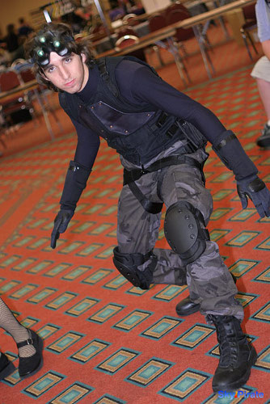

I wore this costume to the most conventions of any costume so far, and earlier versions are barely recognizable as the same character. The goggles are lit up with LEDs, and in one version, were fully functional nightvision. The most fun about this costume is that the character is known for climbing, jumping and sneaking around, which I could do around the convention hotels.
Pictures

Details
Night vision goggles Tutorial
Back to Costume Gallery